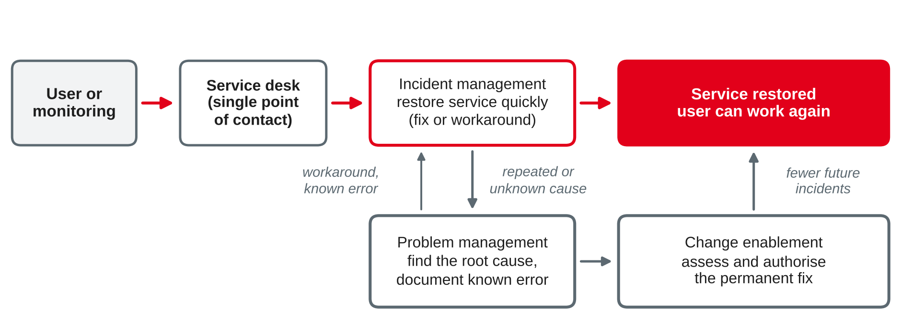
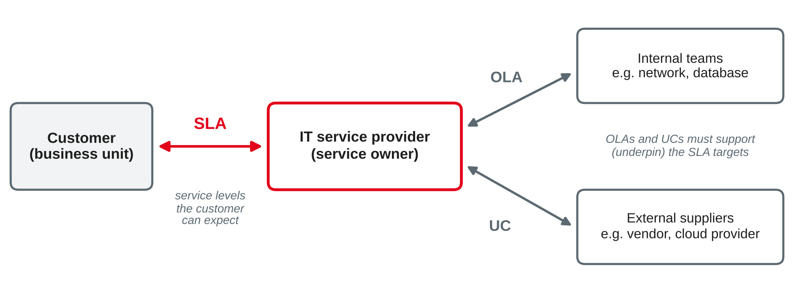

IT Management and EAM
Service desk · incident and problem management · change enablement · service level management, SLAs and OLAs
DHBW · Digital Business Management (Business IT) · Semester 4
You were asked to think of the last time you reported an IT problem at work.
Getting users back to work
The service desk captures demand for incident resolution and service requests. It is the single point of contact between the service provider and all its users.
What it does
How users reach it
Own wording based on AXELOS (2019) and Beims and Ziegenbein (2023).
An incident is an unplanned interruption of a service or a reduction in its quality. Incident management minimises the negative impact of incidents by restoring normal service as quickly as possible.
| Step | What happens |
|---|---|
| Detect and log | User calls the service desk, or monitoring raises an alert; a ticket is created |
| Categorise and prioritise | Which service is affected? How bad is it, and how urgent? |
| Diagnose and resolve | Known fix or workaround first; otherwise escalate to a support group |
| Close | User confirms that the service works; the ticket is documented and closed |
Own wording based on AXELOS (2019) and Beims and Ziegenbein (2023).
Impact: how many users or how much business is affected? Urgency: how fast does the business need a solution?
| Impact ↓ / Urgency → | High | Medium | Low |
|---|---|---|---|
| High (whole unit, revenue, safety) | P1 | P2 | P3 |
| Medium (a team, one location) | P2 | P3 | P4 |
| Low (one user, workaround exists) | P3 | P4 | P5 |
Each priority gets target times, e.g. P1: response 15 min, resolution 4 h · P3: response 4 h, resolution 2 working days.
Own example based on Beims and Ziegenbein (2023).
Two kinds of escalation
Major incident
Own wording based on AXELOS (2019) and Beims and Ziegenbein (2023).
Use the impact–urgency matrix. Give the priority and one sentence of justification.
Removing causes safely
A problem is the cause, or potential cause, of one or more incidents. A known error is a problem that has been analysed but not yet resolved. A workaround reduces the impact of an incident or problem until a full fix is available.
| Phase | What happens |
|---|---|
| Problem identification | Spot problems: trend analysis of incidents, recurring or major incidents, supplier information |
| Problem control | Analyse the problem, find the root cause, document workarounds and known errors |
| Error control | Manage known errors, assess fixes, raise a change for the permanent solution |
Own wording based on AXELOS (2019).

| Incident management | Problem management | |
|---|---|---|
| Goal | Restore service fast | Remove the cause |
| Time horizon | Minutes to hours | Days to months |
Own illustration based on AXELOS (2019).
Five whys
Ishikawa (cause-and-effect) diagram
Own summary based on Beims and Ziegenbein (2023).
A change is adding, modifying or removing anything that could affect services. Change enablement maximises the number of successful changes by assessing risks, authorising changes and managing the change schedule.
Own wording based on AXELOS (2019).
| Type | Characteristics | Authorisation | Example |
|---|---|---|---|
| Standard | Low risk, well understood, documented procedure | Pre-authorised; no new assessment each time | New user account, standard software from the catalogue |
| Normal | Needs assessment and planning | By the change authority, depending on risk: team lead up to management board | New fare logic in the ticketing back-end |
| Emergency | Must be done as soon as possible, e.g. to resolve a major incident or close a security gap | Fast-track with a separate, smaller authority; documentation may follow later | Security patch against an actively exploited vulnerability |
Own wording based on AXELOS (2019).
Own summary based on AXELOS (2019) and Beims and Ziegenbein (2023).
Case: The car-sharing app of Rhein-Neckar Mobil Group. On three Monday mornings in a row, customers cannot unlock cars between 7:00 and 8:30. The service desk receives about 250 calls each time. Restarting the API gateway restores the service; nobody knows why it fails.
Tasks:
Agreeing and keeping promises
Service level management sets clear, business-based targets for service levels and makes sure that services are assessed, monitored and managed against them.
Own wording based on AXELOS (2019).
An SLA is a documented agreement between a service provider and a customer that describes the service and the expected service levels.
| Element | Example: mobile workplace |
|---|---|
| Service description and scope | Laptop, e-mail, VPN for 300 sales staff; excluded: private devices |
| Service hours and support hours | Service 24/7; support Mon–Fri 7:00–19:00 |
| Service level targets | Availability 99.5 % in support hours; response and resolution times per priority |
| Responsibilities of both parties | Customer reports defects via the portal and returns old devices |
| Reporting and review | Monthly report, quarterly review meeting |
| Escalation and consequences | Escalation path; service credits if targets are missed |
Own example based on AXELOS (2019) and Beims and Ziegenbein (2023).
Good targets are …
The watermelon effect
Own wording based on AXELOS (2019).
Availability = (agreed service time − downtime) ÷ agreed service time × 100 %
Example: support hours Mon–Fri 7:00–19:00, 21 working days per month
Always state the time base (service hours, month or year) and what counts as downtime (e.g. planned maintenance excluded).
Own example based on Beims and Ziegenbein (2023).

| Agreement | Between | Example |
|---|---|---|
| SLA | IT service provider and customer | Group IT and the bus and rail unit |
| OLA (operational level agreement) | Provider and an internal team | Group IT service owner and the network team |
| UC (underpinning contract) | Provider and an external supplier | Group IT and the ticket device manufacturer |
Own illustration based on Beims and Ziegenbein (2023) and AXELOS (2019).
Case: Rhein-Neckar Mobil Group, on-board ticketing service (session 5): 400 buses, operation daily 4:30–0:30. Group IT provides the devices and the fare back-end; the device manufacturer repairs hardware (next working day); an external payment provider processes card payments; Group IT's network team runs the mobile data connection.
Draft an SLA between Group IT and the bus and rail unit:
Preparation: find one legal or regulatory rule that affects the IT of your training company. What does the company do to comply — and who checks it?
ITIL® is a registered trademark of PeopleCert group. Diagrams in this deck are own illustrations.